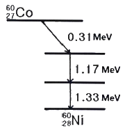
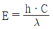
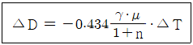
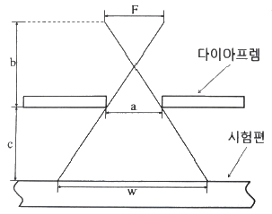

방사선비파괴검사기사 (2021-09-12 기출문제)
1과목: 비파괴검사 개론
1. 다른 비파괴검사법과 비교하여 필름 방사선투과검사의 주요 특성이 아닌 것은?
- 검사결과의 신속성
- 내부결함의 검출
- 검사결과의 영구기록
- 원자번호와 밀도 변화에 대한 검출
(정답률: 84%)

2. 누설되는 누설자속을 자기테이프 위에 기록하는 방법은?
- 자기녹자법
- 직각통전법
- 전류관통법
- 자속관통법
(정답률: 63%)
3. 다음 중 응력측정에 이용할 수 없는 측정법은?
- 인장시험
- 중성자 투과시험
- 광탄성 피막시험
- 스트레인게이지시험
(정답률: 80%)
4. 다음 중 방사선비파괴검사에 사용되지 않는 것은?
- γ선
- X선
- 자외선
- 중성자선
(정답률: 86%)
5. 누설비파괴검사로 발견할 수 있는 결함은?
- 표면균열
- 내부기공
- 내부균열
- 관통균열
(정답률: 74%)
6. 스테인리스강에 주요 합금 성분으로 첨가되는 것은?
- Co, V
- Nb, Cu
- Cr, Ni
- S, Mn
(정답률: 78%)
7. 직경이 12.7mm인 탄소강 봉상 시험편을 인장시험기로 잡아당겨 파괴하였을 때, 파괴된 표면에서 시험편의 직경이 8.71mm이었다면 시험편의 단면 수축률은 약 몇 %인가?
- 31
- 53
- 63
- 83
(정답률: 68%)
8. 합금주철에서 합금 원소의 영향에 대한 설명으로 옳은 것은?
- Al은 흑연화를 저해하는 원소이다.
- Ni은 흑연화를 저해하는 원소이다.
- Mo은 탄화물 생성을 저해하며 흑연화를 촉진한다.
- Cr은 Fe3C를 안정화시키는 강력한 원소이며 Fe와 각종 탄화물을 만든다.
(정답률: 50%)
9. 초경합금에 사용되는 것이 아닌 것은?
- TaC
- WC
- TiC
- PbS
(정답률: 63%)
10. Ca-Si, Fe-Si 등을 접종제로 사용하여 제조되는 주철은?
- Meehanite 주철
- Acicular 주철
- Lanz pearlite 주철
- Emmel 주철
(정답률: 57%)
11. 구리에 대한 설명으로 옳은 것은?
- 전기와 열의 부도체이다.
- 용융점이 약 1083℃이다.
- 결정구조는 상온에서 BCC이다.
- 화학적 저항력이 작아서 부식이 잘 된다.
(정답률: 57%)
12. 인장시험의 응력(σ)-변형률(ε) 곡선에서 비례한도 내 탄성률(E)의 관계식으로 옳은 것은?
- E = ε/σ
- E = σ/ε
- E = ε·σ
- E = ε2/σ
(정답률: 73%)
13. 다음 중 Al-Cu-Mg계 합금은?
- Duralumin
- Corson
- Albrac
- Dumet
(정답률: 73%)
14. 황동의 자연균열(season crack)을 방지하기 위한 대책으로 틀린 것은?
- 표면을 도금한다.
- 표면에 도료를 바른다.
- 응력방지 풀림을 한다.
- 암모니아로 세척한다.
(정답률: 77%)
15. 알루미늄합금 6063-T6에서 T6의 의미는?
- 용체화 처리한 다음 자연시효 시킨 것
- 고온가공에서 냉각한 다음 인공시효경화 처리한 것
- 용체화 처리한 다음 인공시효경화 처리한 것
- 용체화 처리한 다음 안정화 처리한 것
(정답률: 34%)
16. 용접 결함 중 구조상의 결함이 아닌 것은?
- 기공
- 언더컷
- 융합 불량
- 연성 부족
(정답률: 54%)
17. 일반적인 플라스마 아크 용접의 특징으로 틀린 것은?
- 용접속도가 빠르다.
- 수동 용접은 불가능하다.
- 용입이 깊고 비드 폭이 좁다.
- 각종 재료의 용접이 가능하다.
(정답률: 67%)
18. 피복 아크 용접에서 아크 전류가 400A, 아크전압은 35V, 용접속도가 20cm/min 일 때 단위 길이당 용접 입열은 몇 J/cm 인가?
- 42000
- 42500
- 44000
- 45500
(정답률: 73%)
19. 용접작업에서 피닝(peening)을 실시하는 목적으로 옳은 것은?
- 슬래그를 제거하고 용접부의 강도를 높인다.
- 소성가공에 의한 용접부의 경도를 증가시킨다.
- 가공경화에 따른 용접부의 인성을 증가시킨다.
- 비드 표면층에 성질 변화를 주어 용접부의 인장 잔류 응력을 완화시킨다.
(정답률: 74%)
20. 아크 쏠림의 방지대책으로 틀린 것은?
- 직류용접을 피하고 교류용접을 한다.
- 용접부가 긴 경우는 후퇴 용접법(back step welding)으로 한다.
- 용접봉 끝을 아크 쏠림의 반대편으로 향하게 한다.
- 접지점은 용접부 가까이에 접지하고 긴 아크로 용접한다.
(정답률: 77%)
2과목: 방사선투과검사 원리
21. 방사선동위원소 Ir-192 γ선원의 주요 방출에너지(MeV)로만 나열된 것은?
- 0.66, 0.84, 0.91
- 0.31, 0.47, 0.60
- 0.15, 0.17, 0.19
- 0.08, 0.⑤, 0.66
(정답률: 57%)
22. 다음 중 Co-60의 붕괴도에서 0.31 MeV에 해당하는 붕괴는?

- β- 붕괴
- γ 붕괴
- α 붕괴
- X 붕괴
(정답률: 56%)
23. X선의 에너지 E, 파장 λ, 광속도 C라 할 때,

로 나타낸다. 이때 h가 의미하는 것은?- 깁스 상수
- 플랑크 상수
- 볼쯔만 상수
- 광자의 스핀수
(정답률: 60%)
24. X선관의 표적물질이 12도 기울여져 있을 때 방사선의 강도가 최대의 효과를 얻는다는 것과 관계된 것은?
- Heel effect
- Reflection effect
- Tilt effect
- Exposure effect
(정답률: 59%)
25. 다음 중 방사선투과사진의 선명도에 영향을 주는 것이 아닌 것은?
- 방사선의 선질
- 스크린-필름간 접촉 상태
- 초점-필름간 거리
- 필름의 농도
(정답률: 48%)
26. 빛의 투과율이 10%인 방사선투과사진의 농도는 얼마인가?
- 0.7
- 1
- 1.3
- 1.6
(정답률: 57%)
27. 반감기가 127일인 물질의 붕괴상수(λ)는 약 얼마인가?
- 0.0001
- 0.00⑤
- 0.001
- 0.0⑤
(정답률: 52%)
28. 방사선투과사진에서 검사체의 실제 크기와 거의 동일한 영상을 얻기 위한 촬영방법으로 효과적인 것은?
- 선원과 검사체 간 거리를 멀리한다.
- 검사체와 필름 간 거리를 멀리한다.
- 선원의 크기는 가능한 큰 것을 사용한다.
- 방사선빔은 필름면에 평행이어야 한다.
(정답률: 62%)
29. 방사선 입사선량률이 I0인 γ선이 피사체 두께(χ-△χ)cm과 χcm인 알루미늄판을 수직으로 투과한 후에 선량률을 각각 I1, I2라 할 때 투과량의 비(I1/I2)로 옳은 것은? (단, μ는 선흡수계수(cm-1)이다.)
- e-μ△χ
- eμ(χ-△χ)
- eμ△χ
- e-μ(χ-△χ)
(정답률: 56%)
30. X선 장치로 300kVp, 5mA에 1분간 노출한 결과 3m 지점에서 선량이 500mR로 검출되었다. 동일한장치로 300kVp, 4mA에서 5분간 노출하였을 때, 6m 지점에서의 선량은 몇 mR 인가?
- 125
- 250
- 500
- 1000
(정답률: 44%)
31. 방사선투과시험에서의 필름 입상성에 관한 설명으로 틀린 것은?
- 감광 속도가 느린 필름은 낮은 입상성을 나타낸다.
- 현상시간을 증가시키면 상의 입상성도 증가한다.
- 필름의 입상성은 방사선의 선질이 증가함에 따라 증가한다.
- 필름의 입상성의 증가율은 필름의 종류와는 무관한 함수이다.
(정답률: 59%)
32. 방사선투과사진의 콘트라스트(△D)는 아래와 같은 식으로 나타난다. 다음 식과 관련된 내용으로 틀린 것은?

- γ는 특성곡선의 기울기로 구한다.
- μ는 선흡수계수로서 감쇠곡선에서 구한다.
- n은 축전인자로서 시험체에서 발생한 산란선 강도이다.
- △T가 일정할 때 △D를 크게 하기 위해서 γ·μ를 크게 한다.
(정답률: 42%)
33. 방사선투과검사에 사용되는 감마선원의 장점이 아닌 것은?
- 전원이 필요 없다.
- 투과력 조절이 가능하다.
- 휴대하기 용이하다.
- 촬영 위치 선정이 용이하다.
(정답률: 65%)
34. 열형관선량계(TLD)에 관한 설명으로 틀린 것은?
- 방향의존성이 있다.
- 감도가 좋고 측정범위가 넓다.
- 소자를 반복하여 사용할 수 있다.
- 판독장치가 필요하지 않으며 기록 보존이 쉽다.
(정답률: 64%)
35. GM 계수관에 대한 설명으로 옳은 것은?
- 선량률을 측정할 수 없다.
- 1차 생성 이온쌍의 수에는 비례하지 않는다.
- 공간 방사선 측정기 중 가장 고감도이다.
- 저선량률에서 포화하는 단점이 있다.
(정답률: 32%)
36. 방사성 핵종인 세슘 137에 대한 설명으로 틀린 것은?
- 세슘 137은 β방사체이다.
- 세슘 137은 반감기가 약 30년이다.
- 세슘 137은 핵분열 생성물 중 하나이다.
- 세슘 137은 1.22MeV의 γ선을 방출한다.
(정답률: 50%)
37. γ선과 물질과의 상호작용에서 γ선 에너지가 2mo·c2 이상일 때, 일어날 수 있는 상호작용은? (단, 여기서 mo와 c는 각각 전자의 정지질량과 빛의 속도이다.)
- 광전효과
- 콤프턴산란
- 전자쌍생성
- Auger 효과
(정답률: 53%)
38. 방사선투과검사는 방사선의 어떤 특성 차이를 이용하여 결함을 검출 하는가?
- 흡수계수
- 열전도계수
- 팽창계수
- 탄성계수
(정답률: 63%)
39. Ir-192 붕괴에 대한 설명으로 옳은 것은?
- β선을 방출 후 더욱 불안정한 Pt-193이 된다.
- 전자포획을 일으킨 후 더욱 불안정한 Os-193이 된다.
- β선을 방출하여 Pt-192가 되거나 전자포획으로 Os-192가 된다.
- γ선을 방출하지 않는다.
(정답률: 53%)
40. 방사선투과검사 결과 결함과는 무관한 검고 날카로운 새발 모양이 불규칙하게 필름에 나타났다. 이와 같은 현상의 원인과 가장 가까운 것은?
- 오래된 현상액을 사용하고 현상시간이 길어졌을 때
- 필름이 방사선이나 백색광에 감광되었을 때
- 정착과정 중 온도 변화가 심할 때
- 마찰에 의한 정전기의 영향이 있을 때
(정답률: 66%)
3과목: 방사선투과검사 시험
41. 시험체의 단면을 영상화시키는 방법으로 검사하고자 하는 단면 부분만을 선명하게 나타나도록 검사하는 방사선투과검사법은?
- Tomography
- Stereo Radiography
- Electron Radiography
- Electron Emission Radiography
(정답률: 59%)
42. 미소 방사선투과촬영법에서 시편과 필름을 아주 잘 밀착시킴으로써 필름이 허용하는 한 최대 확대율을 얻을 수 있도록 밀착하는데 가장 좋은 도구는?
- 지그
- 카세트
- 밴드
- 진공노출홀더
(정답률: 67%)
43. 방사성 물질을 방사선투과검사할 때 가장 효과적인 검사법은?
- Stereo radiography
- Neutron radiography
- Hogh-speed radiography
- X-ray diffraction
(정답률: 54%)
44. 방사선투과시험에서 현상 방법에 대한 내용으로 틀린 것은?
- 보항제는 현상제가 공기로부터 산화되는 것을 지연 시켜 준다.
- 억제제는 페니돈을 사용하여 Fog를 유발하는 단점이 있다.
- 공업용 X선 필름의 정지액으로는 빙초산 3% 수용액이 주로 사용된다.
- 대표적인 보항제는 황산나트륨이 있다.
(정답률: 47%)
45. X선 발생장치의 선질 및 선량에 관한 내용으로 옳은 것은?
- X선 필름의 감도는 X선의 선질과는 무관하다.
- 관전류를 증가시키면 선질과 선량이 모두 커진다.
- X선 선량률의 수치적인 표현법은 kV를 사용한다.
- X선 선질의 수치적인 표현법은 파장이나 에너지를 사용한다.
(정답률: 36%)
46. 방사선을 형광 스크린과 같은 방사선 검출기에 조사시켜 가시상을 만드는 것은?
- 상증강법
- 입체 방사선 투과검사
- 형광 증배관
- 형광 투시검사
(정답률: 53%)
47. 저전압 X선관의 창(window)에 주로 사용되는 재료는?
- 티타늄
- 탄소
- 베릴륨
- 플라스틱
(정답률: 53%)
48. 방사선투과검사에서 발생되는 산란방사선을 감소시키기 위한 도구가 아닌 것은?
- 연박스크린
- 마스크
- 신틸레이터
- 다이아프램
(정답률: 57%)
49. 순간 방사선투과검사(Flash Radiography)에 사용되는 양극은?
- 선 초점화 양극
- 회전식 양극
- 원추형 양극
- 직사각형 양극
(정답률: 40%)
50. 이동 방사선 투과검사에 대한 설명으로 틀린 것은?
- 실린더형 시험체의 두께가 얇고 긴 길이 이음 용접부에 적용한다.
- 이동 불선명도는 시험체 두께에 방사선 빔폭을 곱한 것을 선원-시험체간 거리로 나눈 값이다.
- 시험체의 선원쪽 면에서 방사선의 빔 폭이 클수록 선원 이동 속도는 작아진다.
- 방사선원의 이동속도가 느리면 과노출이 된다.
(정답률: 34%)
51. 관의 원주용접부의 촬영방법 중 전원주를 동시에 촬영할 수 있는 방법은?
- 내부선원 촬영방법
- 내부필름 촬영방법
- 이중벽 편면 촬영방법
- 이중벽 양면 촬영방법
(정답률: 56%)
52. 방사선투과검사에서 의사결함을 판별하기 위한 촬영기법이 아닌 것은?
- 각도법
- 확산법
- 격자법
- X선 회절법
(정답률: 65%)
53. 다음 방사선 검출기 중 고체 전리를 이용한 검출기로 옳은 것은?
- 전리조
- G-M계수관
- 비례계수관
- 반도체 검출기
(정답률: 44%)
54. 초점의 크기가 4mm인 X선 발생장치로 시험체의 두께 5cm인 철강재를 촬영하고자 한다. 기하학적 불선명도를 1mm 이하로 만족하기 위한 선원-시험체 표면 사이의 최소거리는 몇 cm 인가?
- 20
- 25
- 30
- 36
(정답률: 48%)
55. V개선 용접부에서 용접패스 사이 또는 용접패스와 모재의 측면이 합착되지 않은 상태로 상대적으로 틈이 좁고, 용접부에서 경사지게 위치함으로 방사선 투과검사로 검출이 쉽지 않은 결함은?
- 개재물 혼입
- 융합불량
- 용입슬래그
- 기공
(정답률: 39%)
56. 방사선투과검사에서 현상온도와 시간에 대한 설명으로 틀린 것은?
- 현상온도가 낮으면 현상시간이 증가한다.
- 현상온도가 높으면 콘트라스트는 증가하다가 일정 시간 이상에서는 포화되어 저하하는 경향이 있다.
- 감도를 높이기 위해 현상시간을 연장하는 경우에는 20℃에서 20분 정도가 좋다.
- 25℃이상에서는 현상작용이 신속히 진행되어 Fog의 원인이 된다.
(정답률: 65%)
57. 방사선투과검사에서 형광증감지를 사용할 때의 장점에 대한 설명으로 틀린 것은?
- 강화인자가 커진다.
- 명료도가 향상된다.
- 노출시간을 감소시킨다.
- 저선질로 두꺼운 물체를 촬영할 수 있다.
(정답률: 36%)
58. 다음 중 γ선 조사장치에 필요하지 않은 것은?
- 냉각기
- 차폐용기
- 원격조작장치
- 방사성동위원소
(정답률: 65%)
59. 고장력강의 용접부에 발생하기 쉬운 결함으로 수소에 의한 취화 때문에 생기는 결함은?
- 지연 균열(Delayed crack)
- 고온 균열(Hot crack)
- 비드 균열(Bead crack)
- 크레이터 균열(Crater crack)
(정답률: 43%)
60. Ir-192 선원을 사용하여 고감도 투과촬영법으로 30mm 두께 강판 용접부위를 검사하고자 할 때, 다음 중 금속 증감지로 가장 적합한 것은?
- Cu
- Fe
- Pb
- W
(정답률: 60%)
4과목: 방사선투과검사 규격
61. 원자력안전법령에 따라 방사선작업종사자에 대한 건강진단을 실시할 때, 임상검사 항목이 아닌 것은?
- 말초혈액 중의 백혈구 수
- 말초혈액 중의 적혈구 수
- 말초혈액 중의 혈소판 수
- 말초혈액 중의 혈색소의 양
(정답률: 44%)
62. 원자력안전법령에서 규정하는 방사선작업 종사자에 대한 유효선량한도는 얼마인가?
- 연간 30mSv를 넘지 않는 범위에서 5년간 100mSv
- 연간 30mSv를 넘지 않는 범위에서 5년간 150mSv
- 연간 50mSv를 넘지 않는 범위에서 5년간 100mSv
- 연간 50mSv를 넘지 않는 범위에서 5년간 250mSv
(정답률: 67%)
63. 원자력안전법령에서 규정하는 방사선이 아닌 것은?
- 엑스선
- 감마선
- 알파선
- 2만 전자볼트의 에너지를 가진 전자선
(정답률: 75%)
64. 스테인리스강 용접부의 방사선투과검사방법(KS D 0237)에서 텅스텐 혼입은 몇 종 흠집인가?
- 제1종
- 제2종
- 제3종
- 제4종
(정답률: 56%)
65. 보일러 및 압력용기에 대한 방사선투과검사(ASME Sec.V Art.2)에 의한 γ선 투과시험에서 필름 농도 범위는?
- 1.5 ~ 3.5
- 1.8 ~ 3.5
- 2.0 ~ 4.0
- 2.5 ~ 4.5
(정답률: 56%)
66. 보일러 및 압력용기에 대한 방사선투과검사(ASME Sec.V Art.2)에 따라 관을 촬영할 때 단일벽 촬영기법의 적용이 곤란하여 이중벽 촬영기법을 적용할 경우, 원주 용접부의 전 구간 촬영범위가 요구되는 상황에서 단일벽 관찰에 대한 내용으로 옳은 것은?
- 120도 간격으로 최소 3회 촬영 실시
- 180도 간격으로 최소 2회 촬영 실시
- 90도 간격으로 최소 2회 촬영 실시
- 360도 전체를 최소 1회 촬영 실시
(정답률: 50%)
67. 방사선 안전관리 등의 기술기준에 관한 규칙에서 방사성동위원소 등을 이동사용하는 경우의 기술기준에 해당하지 않는 것은?
- 차폐벽 또는 차폐물에 의하여 방사선을 차폐한다.
- 원격조작장치·집게 등을 사용하여 방사성동위원소와 인체 사이에 적당한 거리가 확보되게 한다.
- 사용시설 외에서 감마선조사장치를 사용하는 경우에는 콜리메터를 장착하고 사용한다.
- 일시적 사용장소에 사용을 폐지한 선원을 보관토록 한다.
(정답률: 74%)
68. 주강품의 방사선투과검사 방법(KS D 0227)에서 방사선원으로 Co-60을 사용할 때, 적용 투과 두께 범위로 옳은 것은? (단, A급을 기준으로 한다.)
- 80mm 이상
- 14mm 이상 40mm 이하
- 40mm 이상 200mm 이하
- 60mm 이상 150mm 이하
(정답률: 44%)
69. 방사성동위원소 사용실의 출입구에 방사능 표지를 붙이고자 할 때 방사능 표지의 반지름 최소 크기로 옳은 것은?
- 5cm
- 10cm
- 15cm
- 20cm
(정답률: 57%)
70. 보일러 및 압력용기에 대한 방사선투과검사(ASME Sec.V Art.2)에 규정된 기법이 아닌 것은?
- 단일벽 촬영 기법 – 단일벽 관찰
- 단일벽 촬영 기법 – 이중벽 관찰
- 이중벽 촬영 기법 – 단일벽 관찰
- 이중벽 촬영 기법 – 이중벽 관찰
(정답률: 43%)
71. 다음 중 인체에 대한 방사선 피폭을 줄이기 위한 방법이 아닌 것은?
- 차폐체를 이용한다.
- 방사선원을 제거한다.
- 방사선원을 분쇄한다.
- 방사선구역으로부터 벗어난다.
(정답률: 65%)
72. 보일러 및 압력용기에 대한 표준방사선투과검사(ASME Sec.V, Art.22, SE 94)에 따라 Co-60의 방사성동위원소를 사용하여 촬영할 때 최소한 두께가 얼마 이상인 연박증감지를 사용하여야 하는가?
- 0.002 인치
- 0.0⑤ 인치
- 0.01 인치
- 0.02 인치
(정답률: 38%)
73. 방사선 안전관리 등의 기술기준에 관한 규칙에 따라 방사성동위원소 등을 이동사용하는 경우의 방사선 작업조의 조장이 될 수 없는 사람은?
- 방사성동위원소취급자일반면허 취득자
- 방사선투과검사 경력이 2년이며 방사선비파괴검사기능사 자격 취득자
- 방사선투과검사 경력이 1년이며 방사선비파괴검사산업기사 자격 취득자
- 방사선투과검사 경력 3년 이상인 근로자
(정답률: 53%)
74. 강 용접 이음부의 방사선투과검사(KS B 0845)에서 모재의 두께에 따른 투과도계의 식별 최소 선 지름으로 옳은 것은? (단, 상질은 A급이다.)
- 모재의 두께 5mm – 최소 선 지름 0.25mm
- 모재의 두께 9mm – 최소 선 지름 0.25mm
- 모재의 두께 15mm – 최소 선 지름 0.40mm
- 모재의 두께 22mm – 최소 선 지름 0.50mm
(정답률: 28%)
75. 방사선투과검사에 사용되는 방사성동위원소 중 가용성 분말이기 때문에 캡슐로부터 누설이 발생하지 않도록 특별한 주의가 필요한 것은?
- Cs-137
- Co-60
- Ir-192
- Tm-170
(정답률: 35%)
76. 보일러 및 압력용기에 대한 방사선투과검사(ASME Sec.V Art.2)에서 모재두께 50mm 미만인 경우 기하학적 불선명도의 최대 권고값은 얼마인가?
- 0.010 인치
- 0.020 인치
- 0.030 인치
- 0.040 인치
(정답률: 44%)
77. 주강품의 방사선투과검사 방법(KS D 0227)에서 배면으로부터의 산란선 영향을 확인하기 위하여 부착해야 하는 B문자의 사이즈는?
- 높이 5mm, 두께 최저 1.5mm
- 높이 5mm, 두께 최저 1mm
- 높이 10mm, 두께 최저 1.5mm
- 높이 10mm, 두께 최저 1mm
(정답률: 41%)
78. 보일러 및 압력용기에 대한 방사선투과검사(ASME Sec.V Art.2)에 따른 이동 방사선투과검사 시 이동방향에서 측정된 용접부 선원 쪽에서의 빔폭(W)은? (단, F(선원크기) : 3mm, a : 60mm, b : 120mm, c : 100mm)

- 112.5mm
- 128.5mm
- 133.5mm
- 141.5mm
(정답률: 45%)
79. 강 용접 이음부의 방사선투과검사(KS B 0845)에서 강판의 맞대기 용접 이음부를 촬영하는 경우 계조계의 사용방법이 옳은 것은?
- 모재의 두께 25mm에 계조계 15형을 사용하였다.
- 모재의 두께 30mm에 계조계 15형을 사용하였다.
- 모재의 두께 30mm에 계조계 25형을 사용하였다.
- 모재의 두께 45mm에 계조계 25형을 사용하였다.
(정답률: 24%)
80. 강 용접 이음부의 방사선투과검사(KS B 0845)에서 강관의 원둘레 용접 이음부에 적용되는 상질이 아닌 것은?
- P3급
- P2급
- P1급
- A급
(정답률: 37%)